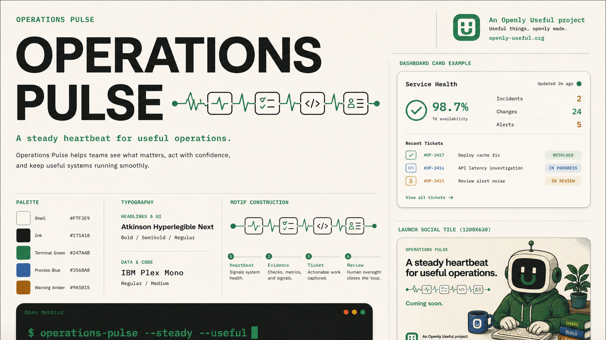

operations_describe
Returns the complete tool and connection catalog for setup, review, or UI rendering.
“What can this pulse use, and which options cost money?”
Run recurring checks, remember what happened, and turn verified signals into reviewable tickets—without requiring a paid service.
The operating loop
A pulse checks local repository state, documentation, and selected logs. Every run keeps compact evidence in SQLite. Before creating work, it looks for related tickets—so the next agent or human starts with history instead of a blank prompt.
Deterministic checks come first. Models are optional interpretation layers, not required infrastructure.
Self-describing at launch
Every tool declares its use case, cost class, data boundary, write behavior, approval rule, and a working example.
Returns the complete tool and connection catalog for setup, review, or UI rendering.
“What can this pulse use, and which options cost money?”
Search prior and active work before staffing a new ticket.
Runs configured checks and stores evidence. Ticket creation is separately opt-in.
Adds one proposal to the local queue with source, tags, and priority.
Surfaces recurring noise and changes across recent runs.
Explains free, self-hosted, subscription, and bring-your-own paths.
Free first, connected when useful
The host owns the guided connection prompt and secret store. Operations Pulse supplies the standard capability contract.
Guided setup
This picker generates a reviewable local setup command. It never asks for, stores, or transmits a credential. OAuth stays in a compatible host's own approval screen; bring-your-own credentials stay in your environment or secret manager.
First local run
Node.js 24 or newer is the only runtime requirement. The supported first release is local stdio MCP plus SQLite.
$ npm install
$ npm run build
$ node packages/core/dist/cli.js init
$ node packages/core/dist/cli.js pulse run --root .Endorsed child identity
The pulse-and-ticket motif belongs to this product. The Open Monitor identity remains the unchanged institutional mark.
